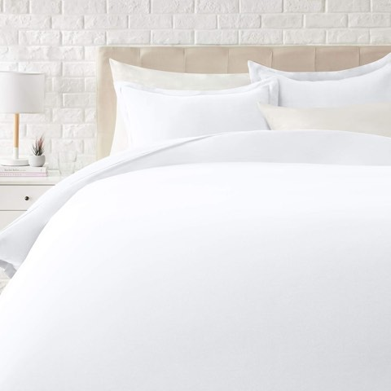
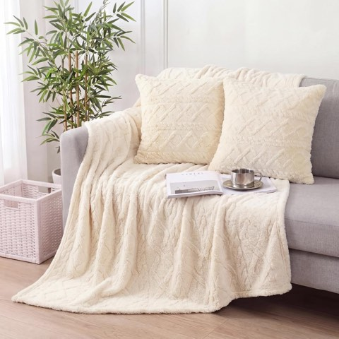
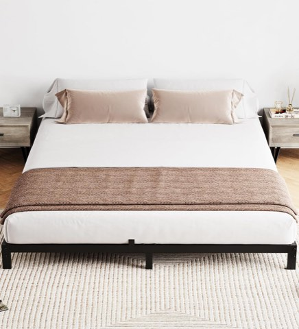
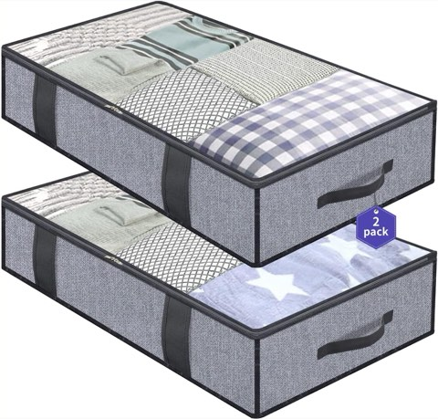
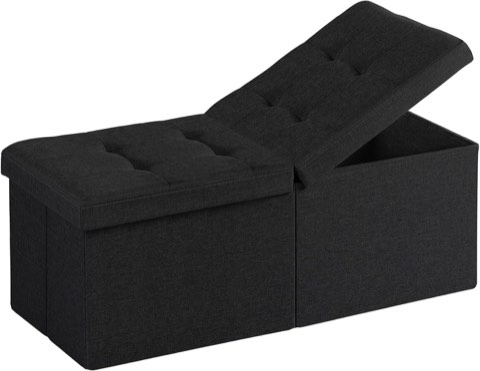
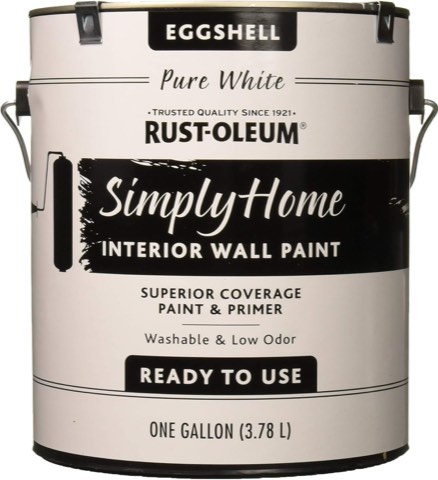

A small bedroom doesn't have to feel small at all.
Storage systems solve clutter, but they don't actually change how big a room reads to the eye.
These 20 ideas work on perception instead, light, reflection, scale, color, the tricks that make a room feel more spacious than its square footage suggests.
Most of them work alongside whatever storage system is already in place.

20 Visual Tricks Worth Trying
1. Skip the Massive Statement Pieces
One oversized furniture piece can dominate a small room more than several smaller ones combined.
Scaling furniture to the actual room size, rather than to what looks good in a showroom, matters more here than anywhere else in the house.
This is more of a shopping discipline than a purchase, measuring before buying, every single time.
A room furnished at the right scale almost always feels bigger than one with a single oversized anchor piece.

2. Choose Acrylic or Glass Furniture
A clear acrylic chair or glass-top table takes up physical space without taking up visual space.
This works especially well for a single accent piece rather than furnishing an entire room this way.
It lets the eye see through to the floor and walls behind it, rather than stopping at a solid surface.
A subtle trick that photographs better than it sounds on paper.

3. Consider a Murphy Bed
A bed that folds away during the day reclaims the room's entire floor for other use.
This is a bigger investment and installation than most ideas here, but it solves the space problem more completely than any other single change.
It suits a bedroom that also needs to function as an office, studio, or guest space.
Modern versions look far less dated than the format's reputation suggests.

4. Stick With Low-Contrast Decor
High contrast, dark furniture against light walls, bold patterns against plain backgrounds, draws the eye to specific points and breaks up the sense of continuous space.
Keeping contrast low lets the eye move smoothly across the whole room instead.
This doesn't mean everything has to be the same color, just that nothing jumps out too sharply.
A subtler approach than it sounds, and one of the more overlooked tricks on this list.

5. Use Hidden Storage
Storage that disappears behind a closed door or under a lid keeps surfaces clear without actually owning less.
This is less about adding furniture and more about choosing pieces that conceal rather than display.
A room with fewer visible objects consistently reads as more spacious, even at the same storage capacity.
Pairs naturally with the minimalist mindset idea further down this list.

6. Try Floating Nightstands
A wall-mounted nightstand skips the legs and base of a standard one, leaving visible floor underneath.
This is the nightstand equivalent of the floating desk idea below.
It suits a room narrow enough that even a small standard nightstand feels like it's in the way.
A simple install for most standard wall types.

7. Keep Bedding Clean and Simple
A bed piled with too many pillows and patterns becomes a visual focal point that shrinks the room around it.
Simple, consistent bedding lets the eye move past the bed instead of stopping there.
This is a low-cost change, especially if it just means editing what's already on hand.
A calmer bed often makes the whole room feel calmer by extension.


Amazon Basics Lightweight Microfiber 3 Piece Duvet Cover Set with Zipper Closure
Shop on Amazon8. Switch to Sliding Doors
A swinging closet door needs clearance space that a small room can't always spare.
A sliding door eliminates that clearance requirement entirely.
This is a bigger project than most ideas on this list, since it usually means replacing the door and track.
Worth it for a closet positioned where a swinging door genuinely blocks usable floor space.

9. Try a Storage Headboard
A headboard with built-in shelving or compartments adds storage in a spot that's otherwise purely decorative.
This works especially well for books, a lamp, or small daily items that would otherwise need a nightstand.
It's a genuine multi-tasking furniture choice, specific to the one piece every bedroom already has.
Worth considering before buying a separate nightstand at all.

10. Stick to One Cohesive Color Story
Too many competing colors break a small room into visually separate chunks.
One consistent palette, even with some variation in shade, reads as one continuous, larger space.
This doesn't mean everything has to match exactly, just that nothing clashes hard enough to interrupt the flow.
A cohesive palette is often what separates a small room that feels cramped from one that feels cozy.


3 Piece Boho Knit Throw Blanket and Pillow Cover Set, Textured Diamond Pattern
Shop on Amazon11. Think Up, Not Out
Tall, narrow shelving uses vertical wall space a wide dresser never could.
This applies to storage, display shelves, and even art placement, stacking upward instead of spreading out.
A small room has limited floor space but often plenty of unused wall height.
This principle underlies several other ideas on this list, from curtains to shelving.

12. Install a Floating Desk
A wall-mounted desk skips the legs and bulk of a standard desk entirely.
This works well for anyone who needs a small workspace but can't spare the floor footprint.
It also keeps the area underneath open for a chair to tuck away completely.
A practical option for a bedroom doing double duty as a home office corner.

13. Go Low With the Bed Frame
A low-profile bed frame leaves more visible wall space above it, which reads as a taller room.
It also tends to feel more grounded and modern than a tall, bulky frame.
This is a straightforward furniture swap rather than a renovation.
Pairs especially well with the floor-to-ceiling curtain trick further down this list.


IDEALHOUSE 6 Inch Full Size Metal Bed Frame with Under-Bed Storage, Black
Shop on Amazon14. Use Under-Bed Storage
The space under a bed frame is usually dead space in a small bedroom.
Bins or drawers that slide underneath reclaim it without adding a single visible piece of furniture.
This keeps clutter out of sight while leaving the actual floor space feeling open.
One of the few storage ideas here that doubles as a space-perception trick too.


Onlyeasy Foldable Underbed Storage Bags, 2 Pack, Zippered and Breathable
Shop on Amazon15. Use Mirrors Generously
A large mirror reflects both light and the room itself, doubling the sense of depth at a glance.
Leaning an oversized mirror against a wall works as well as hanging one.
Positioning it to reflect a window maximizes the light-bouncing effect.
This is consistently one of the highest-impact tricks for making a small room feel larger.

16. Go Floor-to-Ceiling With Curtains
Hanging curtains from just above the ceiling line, rather than directly above the window frame, visually stretches the wall upward.
This is one of the cheapest tricks on this list, since it just means moving the curtain rod.
Taller curtains make the ceiling itself feel higher than it actually is.
A small, inexpensive change with an outsized visual payoff.

YaFex Heavy Duty Adjustable Black Curtain Rod, 32 to 150 Inch
Shop on Amazon17. Mount the Lighting
A table lamp eats surface space a small nightstand can't spare.
Wall-mounted sconces or pendant lights free up that space entirely while still lighting the room well.
This is a relatively simple electrical swap in most cases.
It also tends to look more intentional than a lamp cord running across a nightstand.

18. Embrace a Minimalist Mindset
Fewer items on display means more visible floor and surface area, which is really what makes a room feel bigger.
This isn't about owning less, it's about displaying less at once.
A room with breathing room between objects reads as larger than one with the same square footage packed tight.
This mindset underlies nearly every other idea on this entire list.

19. Choose Multi-Tasking Furniture
A storage ottoman, a desk that folds away, or a bed with built-in drawers does the work of two pieces in the footprint of one.
This matters more in a small room than almost anywhere else in the house.
Fewer separate pieces means more open floor, which reads as more space even before anything else changes.
Worth prioritizing before buying any single-purpose furniture for a tight room.


35 Inch Folding Storage Ottoman Bench, End of Bed Footrest with Storage
Shop on Amazon20. Keep It Light and Neutral
Dark walls absorb light and visually shrink a room, even a well-proportioned one.
Soft whites, warm beiges, and pale grays bounce available light back around instead.
This is one of the cheapest changes on the whole list, since it's mostly a paint cost.
A light palette gives every other idea here more room to actually register.


Rust-Oleum Simply Home Interior Wall Paint, Eggshell Pure White, 1 Gallon
Shop on AmazonFinal Thoughts
None of these 20 tricks require more square footage, they just change how the existing footage reads to the eye.
Light, reflection, scale, and a consistent color story do more for a small room's feel than any storage system alone ever could.
Pick a handful that fit the room's actual layout and build from there.
A small bedroom, styled with intention, rarely feels as small as its measurements suggest.